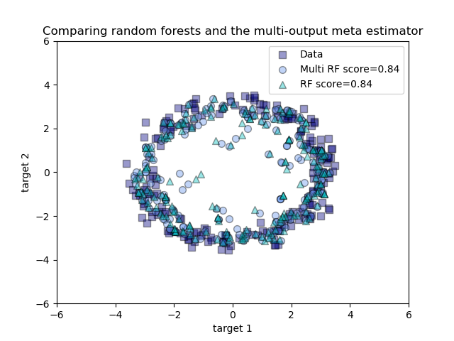

Note
Click here to download the full example code or to run this example in your browser via Binder
Comparing random forests and the multi-output meta estimator¶
An example to compare multi-output regression with random forest and the multioutput.MultiOutputRegressor meta-estimator.
This example illustrates the use of the multioutput.MultiOutputRegressor meta-estimator to perform multi-output regression. A random forest regressor is used, which supports multi-output regression natively, so the results can be compared.
The random forest regressor will only ever predict values within the range of observations or closer to zero for each of the targets. As a result the predictions are biased towards the centre of the circle.
Using a single underlying feature the model learns both the x and y coordinate as output.
# Author: Tim Head <betatim@gmail.com>
#
# License: BSD 3 clause
import numpy as np
import matplotlib.pyplot as plt
from sklearn.ensemble import RandomForestRegressor
from sklearn.model_selection import train_test_split
from sklearn.multioutput import MultiOutputRegressor
# Create a random dataset
rng = np.random.RandomState(1)
X = np.sort(200 * rng.rand(600, 1) - 100, axis=0)
y = np.array([np.pi * np.sin(X).ravel(), np.pi * np.cos(X).ravel()]).T
y += 0.5 - rng.rand(*y.shape)
X_train, X_test, y_train, y_test = train_test_split(
X, y, train_size=400, test_size=200, random_state=4
)
max_depth = 30
regr_multirf = MultiOutputRegressor(
RandomForestRegressor(n_estimators=100, max_depth=max_depth, random_state=0)
)
regr_multirf.fit(X_train, y_train)
regr_rf = RandomForestRegressor(n_estimators=100, max_depth=max_depth, random_state=2)
regr_rf.fit(X_train, y_train)
# Predict on new data
y_multirf = regr_multirf.predict(X_test)
y_rf = regr_rf.predict(X_test)
# Plot the results
plt.figure()
s = 50
a = 0.4
plt.scatter(
y_test[:, 0],
y_test[:, 1],
edgecolor="k",
c="navy",
s=s,
marker="s",
alpha=a,
label="Data",
)
plt.scatter(
y_multirf[:, 0],
y_multirf[:, 1],
edgecolor="k",
c="cornflowerblue",
s=s,
alpha=a,
label="Multi RF score=%.2f" % regr_multirf.score(X_test, y_test),
)
plt.scatter(
y_rf[:, 0],
y_rf[:, 1],
edgecolor="k",
c="c",
s=s,
marker="^",
alpha=a,
label="RF score=%.2f" % regr_rf.score(X_test, y_test),
)
plt.xlim([-6, 6])
plt.ylim([-6, 6])
plt.xlabel("target 1")
plt.ylabel("target 2")
plt.title("Comparing random forests and the multi-output meta estimator")
plt.legend()
plt.show()
Total running time of the script: ( 0 minutes 0.502 seconds)